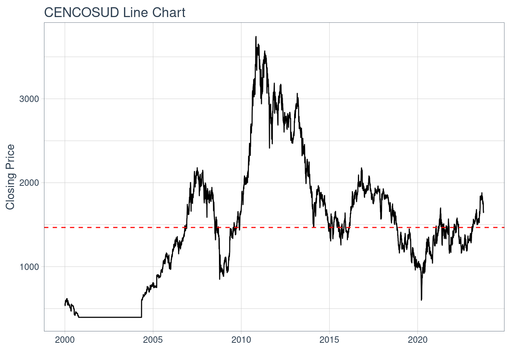
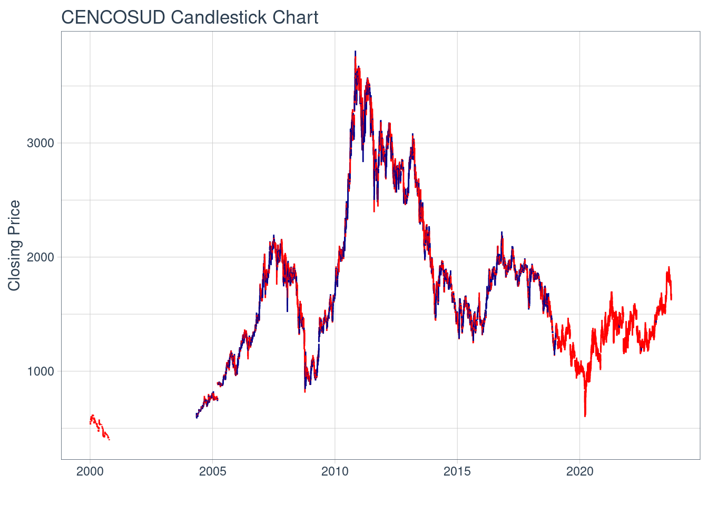
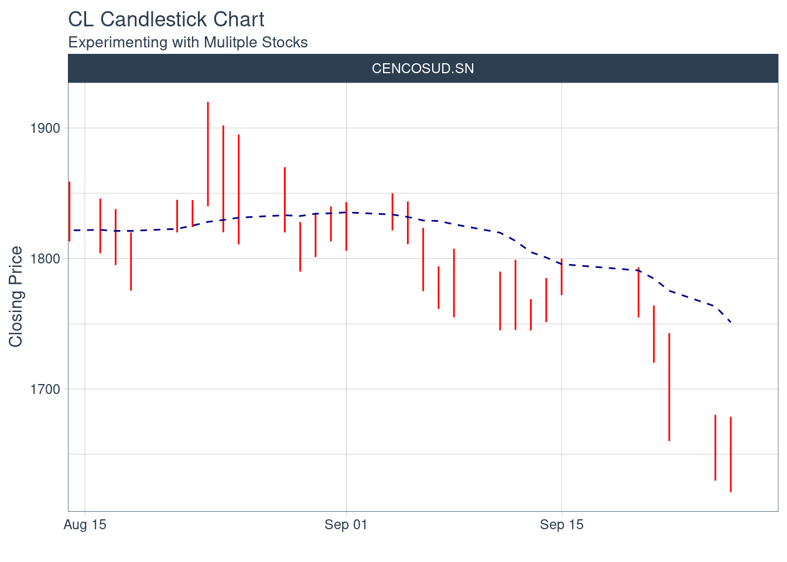

Proyecto Gestión Financiera
Descripción Activo y Contexto (Hito 1)
Fecha de entrega: Jueves 28 de Septiembre 23:59.
Definición
Un activo inmobiliario corresponde a propiedades tales como edificaciones o terrenos que tienen un valor comercial. Este valor se observa en la transacción de compra y venta del bien o también mediante el arriendo de este. Los activos inmobiliarios forman parte importante del desarollo tanto económico como social de un país y por ende, es de suma importancia, comprender como estos se encuentran presentes en lo cotidiano y el uso que se les puede dar para generar ingresos y rentabilidad.
La empresa a estudiar en relación a los activos inmobiliarios será : Cencosud S.A . Esta institución opera en diversos países de america, trabajando principalmente en el rubro minorista. Esto ultimo centrado en el ámbito del retail presente en los 5 mercados más desarrollados de latino America. La empresa tiene participación en diversos países entre los que destacan Argentina, Brasil, Chile, Colombia y Perú. Cencosud tiene a su disposición 915 supermercados, 108 tiendas de mejoramiento del hogar, 49 tiendas por depto y 67 centros comerciales. Esta empresa se diferencia por el hecho de preocuparse por sus clientes y hacerlos partícipes de sus desiciones con el fin de promover un buen futuro para la compañía.
En la actualidad, Cencosud cuenta con un total de US$ 4.912 en activos susceptibles al área inmobiliaria, y tiene un EBITDA (earnings before interest and taxes) de US$ 116 millones anuales, por lo que representa ser una empresa de gran importancia para el mercado Chileno.
Habiendo explicado el activo que se analizará en mayor profundidad a continuación, cabe mencionar la importancia que tiene el área inmobiliaria en Chile y porque se debe realizar el estudio de ésta, para comprender de mejor manera el funcionamiento del mercado inmobiliario en el país. En base a una búsqueda exhaustiva sobre documentos de relevancia intelectual con relación al tema a estudiar, se encontró un articulo que explica cómo varía el valor del suelo en Chile. Lo anterior, tiene un impacto directo en la compañía Cencosud s.a debido a que bajo la perspectiva financiera, se tiene que la edificación de centros comerciales impacta positivamente en el valor de las propiedades aledañas. Esto último, debido a que genera una cercanía a insumos tanto básicos como elementos de ocio para las persona generando con ello, un impacto en el consumo y flujo de dinero del país.
Link referencia : https://www.scielo.cl/scielo.php?pid=S0718 34022020000200121&script=sci_arttext&tlng=en
El activo Cencosud tiene un valor promedio para el intervalo igual a 1467

Motivación
En base a la empresa estudiada, es relevante estudiar en específico el área relacionada a los centros comerciales, que tiene la compañía a su disposición. Esto último debido a que en Chile, una gran parte de los habitantes del país asisten en repetidas ocaciones a estas grandes edificaciones, para realizar sus compras o simplemente tener tiempo de ocio. Lo anterior se puede evidenciar en una noticia presentada por el diario financiero : (https://www.df.cl/empresas/retail/cencosud-shopping-comienza-el-ano-con-entusiasmo-tras-incremento-de-un) que menciona que Cencosud comenzó el año 2023 identificando un incremento en las visitas e ingresos en la sucursal “Mall Costanera Center”, lo que genera un impacto positivo en la economía del país debido al aumento en el flujo monetario de este. Ahora bien, se decidió realizar la investigación sobre el área de los centros comerciales debido a su gran importancia en el desarollo del país ya que estos generan más del 20% del total de empleos a nivel nacional, además de aportar varios puntos porcentuales en el PIB del país. (https://www.anda.cl/revista/los-chilenos-aman-ir-al-centro-comercial/)
Contexto
Ahondando en lo anterior, este activo Cencosud S.a, hace parte importante del mercado Chileno debido a su gran número de centros comerciales y el porcentaje de empleos que la compañía logra ofrecer . Es importante destacar que este activo salió a la bolsa en Junio 2019, generando con ello ser la mayor apertura en bolsa del mercado local, lo que demuestra la importancia de estudiar esta compañía y comprender su funcionamiento en el ámbito financiero. Continuando con lo mencinado anteriormente, Cencosud ha sufrido constantes cambios desde sus inicios hasta la fecha, pero siempre se ha centrado en un modelo de negocio compuesto por 5 pilares fundamentales los que se representan a continuación.
Fortalecimiento financiero
Innovación y nuevas tendencias
Crecimiento orgánico e inorgánico
ASG (gestión de los factores ambientales, sociales y de gobernanza)
Desarollo de talento
Si bien, estos pilares son fundamentales para comprender la metodología que ha llevado a cabo y posiblemente explique de cierta forma el éxito de la compañía, es necesario estudiar cómo se ha logrado financiar la empresa en los últimos años. Para el financiamiento, como se mencionó anteriormente, se tiene por un lado los activos de renta variable (acciones) y por otro lado renta fija (bonos). Comenzando por los activos de renta variable, se tiene que Cencosud hasta el día de hoy ha emitido un total de 2.863.129.447 acciones repartidas en 4 grandes grupos. En primer lugar se tiene el grupo controlador con un 55% de estas, luego un 20,9% son propiedad de inversionistas extranjeros, 13% tiene relación con las AFP y el resto se encuentra repartido en diversos pequeños accionistas.

+17.38.12.png)
Imagen 1 : Distribución de las acciones
Link : “https://www.cencosud.com/estructura-accionaria”
Ahora bien, luego de conocer como se encuentran distribuidas las acciones de la empresa, es fundamental observar la variabilidad que estas han tenido en el último tiempo y el número de acciones tranzadas para observar la relevancia de la compañía en el mercado de valores.
%2018.06.40.png)
Imagen 2 : Variabilidad de las acciones
%2015.21.30.png)
Imagen 3 : Tranzabilidad de acciones en bolsa (Fuente : Bolsa de Santiago)
Ahora bien, es importante mencionar los activos de renta fija en los que participa la compañía en análisis. Cencosud S.A utiliza la emisión de bonos para su financiamiento y con esto lograr obtener mejores resultados en la empresa. Lo anterior contribuye en la obtención de fondos para destinar estos a una serie de aspectos necesarios, tales como la construcción de nuevos centros comerciales, compra de terrenos entre otros. A continuación se presenta una tabla de los últimos bonos emitidos por la empresa que figuran en la página de la compañía en donde se identifica la moneda, monto, tasa cupón y duración de estos.
%2015.16.04.png)
Es posible notar que este instrumento de deuda se ha utilizado en diversas ocasiones lo que demuestra que es un activo recurrentemente utilizado por Cencosud s.a para su funcionamiento a nivel financiero. Esto puede deberse a varias razones, entre ellas la más relevante es que al emitir un bono como instrumento de deuda, se puede obtener financiamiento a bajas tazas de interés lo que permite rentabilizar de mejor manera el dinero de la compañía.
Si bien, lo anterior es relevante con respecto a los activos financieros en los que tiene participación la empresa, existe otra variable que afecta directamente al sector inmobiliario del país. Esta variable es el indicador del IPC (indice de precios al consumidor). Este tiene estrecha relación con otros indicadores tales como la inflación del país y define el poder adquisitivo que tienen los consumidores. Por ende, un aumento en este indicador denota inflación y disminuye el poder adquisitivo de las personas, por lo cual no podrán adquirir la misma cantidad de bienes y el consumo en general disminuye generando con esto un estancamiento de la economía del país. (Fuente : Banco central)
Análisis de Largo Plazo
A lo largo de la vida de Cencosud S.A, la empresa ha emitido deuda en diferentes instrumentos financieros. Entre los más relevantes a estudiar se encuentran los bonos y acciones comunes. Estas acciones, lograron efectuar recientemente un pago de dividendo (10 de Mayo 2023) a los accionistas lo que genera un aspecto positivo para estos ya que, no sólo rentabilizaron su inversión en base a la variabilidad en el precio de la acción, sino que también en relación al pago de dividendos. Es importante mencionar que al día de hoy la empresa cuenta con 1622 accionistas y 2.838.082.214 acciones suscritas y pagadas (fuente: banco central). Ahondando en lo anteriormente mencionado, cabe destacar que el tipo de acciones emitidas por la empresa son acciones comunes y pertenecen a una misma serie , esto se basó en información provista por la CMF, además, se pudo identificar que en el año 2012 se emitieron 270.000.000 acciones y el año siguiente se emitieron otras 332.987.717 acciones bajo las mismas condiciones que en el año 2012.
Posteriormente, se debe analizar cómo se encuentra estructurada la deuda en relación a la emisión de bonos de la empresa. En relación a esto se puede decir que Cencosud S.A ha emitido bonos en distintas ocasiones que se logran observar en su página web en donde figura el nombre del bono, moneda en el que fue emitido, monto, tasa cupón que indica el porcentaje del nominal que es pagado en cada “cuota” y la duración de estos. Es relevante comentar, que en base a lo visto en el capítulo 15, los bonos se pueden separar en dos tipos uno de ellos se determina como bono a tasa fija en el que la tasa de interés se fija al momento de la emisión y no varía durante la duración del activo. Por otro lado, se tienen los bonos con tasa variable, en este tipo de deuda se tiene que en cada pago (“cuota” - cupón) la tasa de interés que se debe pagar varía con el tiempo. Es por este motivo, que la empresa debe determinar de manera adecuada el plazo y el monto de las emisiones de deuda que realice en estos activos financieros con el fin de optimizar sus recursos y rentabilizar sus ganancias.
Caracterización de emisiones históricas (Aplicación cap. 20)
En relación a la emisión de deuda en base a los activos financieros comentados anteriormente (acciones y bonos) se debe realizar el análisis por separado, debido a que cada uno de ellos tiene un procedimiento distinto. En primer lugar, analizando la emisión de acciones se logran identificar en la página de la CMF dos fechas más recientes de emisión. La primera de ellas fue en el año 2012 en el cúal se emitieron 270.000.000 acciones y en el año posterior siguiendo las mismas condiciones, se emitieron 332.987.717 acciones. Para esta emisión fue necesario seguir una serie de pasos como se detallan a continuación.
- Decisión de Emisión : es en donde la junta directiva de la empresa decide emitir nuevas acciones con el fin de obtener financiamiento para expandirse y llevar a cabo nuevos proyectos.
- Valorar las acciones : esto se debe realizar mediante la valorización de la empresa con el fin de determinar un valor para determinar el precio de emisión en base al monto que se desea recaudar.
- Preparación de los documentos : en este proceso se deben ordenar y generar los documentosy bases legales para la emisión de este activo. Debe incluir situación de la empresa y los términos de la emisión.
- Aprobación : Toda emisión debe ser aprobada por un organismo regulador financierode Chile, la CMF, previo a la emisión.
- Oferta privada - pública : Se ofrecen las nuevas acciones a un grupo de inversionistas seleccionado y posterior a ello, al público general que busca realizar transacciones bursátiles.
- Colocación de las acciones: Se ponen en venta las acciones en el mercado, esto puede llevarse a cabo en la bolsa de valores de santiago en donde serán tranzadas las nuevas acciones de la compañía.
- Registro de accionistas : Se deben registrar los nuevos accionistas de la empresa con el fin de llevar un registro de los propietarios de estas.
- Uso de fondos: Posterior al recaudamiento de los fondos que se buscaban reunir, se deben utilizar en el fín para el que fue emitido el activo financiero.
- Reporte a los inversores : Luego de haber emitido las acciones, la empresa debería entregar o facilitar un informe del desarollo de esta y su situación financiera para transparentar sus utilidades y movimientos.
Posterior al análisis de los pasos necesarios para la emisión de acciones se debe comprender cómo se emite deuda utilizando los bonos como activo financiero. Para ello, al igual que para la emisión de acciones se debe seguir una serie de pasos que se menciona a continuación.
- Decisión de emisión de bono : es en donde la junta directiva de la empresa decide emitir deuda con el fin de obtener financiamiento para expandirse y llevar a cabo nuevos proyectos observando las tasas de interés actuales, con el fin de lograr la rentabilidad de mi inversión.
- Valorización de los bonos : Antes de emitir un bono se debe realizar una valorización con el fin de determinar características tales como el monto nominal, el cupón (tasa de interés), la duración o plazo de vencimiento, entre otros aspectos relevantes.
- Documentación : Al igual que para la emisión de acciones se deben ordenar y generar los documentos y bases legales para la emisión de este activo. Debe incluir situación de la empresa y los términos de la emisión.
- Calificación crediticia : Como los bonos deben cumplir con ciertas caracterísitcas de emisión, se considera que una agencia de clasificación, clasifique la empresa con el fin de otorgar mejores condiciones al momento de la emisión del activo financiero.
- Oferta pública - pública : Se ofrecen estos nuevos bonos a un grupo de inversionistas seleccionado y posterior a ello, al público general que busca rentabilizar su dinero en base a interéses generados en el pago de cada cupón.
- Colocación de los bonos : se ponen en venta los bonos en el mercado, esto puede llevarse a cabo en una bolsa de valores en donde serán adquiridos por inversionistas que estén de acuerdo con las condiciones de emisión.
- Registro de tenedores de bonos : Se deben registrar los nuevos tenedores de bonos de la empresa con el fin de llevar un registro de los propietarios de estos y las fechas de pago.
- Uso de los fondos : Posterior al recaudamiento de los fondos que se buscaban reunir, se deben utilizar en el fín para el que fue emitido el activo financiero.
- Pago de intereses y principal : La empresa emisora está obligada a realizar los pagos de intereses de acuerdo a las condiciones de emisión a lo largo de la duración del activo financiero. Al final de la duración de este, se debe pagar el principal que equivale al monto del bono.
- Reporte a los inversionistas : Luego de haber emitido laos bonos, la empresa debería entregar o facilitar un informe del desarollo de esta y su situación financiera para transparentar sus utilidades y movimientos.
Si bien, anteriormente se presentan los pasos que se deben seguir para la emisión de acciones como bonos, el libro presenta 5 pasos que se mencionarán a continuación :
- Se debe obtener la aprobación del consejo de administración.
- Segundo paso la empresa debe preparar una declaración de registro y presentarla ante la SEC. Esta incluye, entre otras cosas, el historial financiero, los detalles sobre las operaciones actuales de la empresa, el financiamiento propuesto y los planes futuros. Este documento se requiere para todas las emisiones públicas de títulos, con dos excepciones principales:
A) Préstamos que vencen dentro de nueve meses.
B) Emisiones que implican menos de 5 millones de dólares.
La segunda excepción se conoce como la exención de emisiones pequeñas. Las emisiones inferiores a 5 millones de dólares se rigen por el reglamento A, que requiere sólo un formato abreviado de registro de la oferta en lugar de una declaración completa. Para que el Reglamento A sea aplicable, las personas con acceso a información privilegiada no pueden vender más de 1.5 millones de dólares en títulos.
- La SEC estudia la declaración de registro durante un periodo de espera. Así, la empresa puede distribuir copias de un prospectopreliminar. Un prospecto contiene parte de la información incluida en la declaración de registro y la empresa lo entrega a los posibles inversionistas, pero no puede vender los títulos durante el periodo de espera. Sin embargo, se pueden presentar ofertas verbales.
El registro de la emisión entra en vigor 20 días después de la presentación de la declaración, a menos que la SEC envíe una carta de observaciones con sugerencias de cambios. Una vez realizados los cambios, se inicia de nuevo el periodo de espera de 20 días.
- Inicialmente, la declaración de registro no contiene el precio de la nueva emisión. En la fecha cuando entra en funcionamiento el registro de la emisión se determina el precio de los títulos e inicia la campaña de venta con todo el cumplimiento de la ley. Un prospecto definitivo debe acompañar la entrega de los títulos o la confirmación de la venta.
- El anuncio publicitario sobre una nueva emisión se utiliza durante y después del periodo de espera.
FUENTE : Libro “Finanzas_corporativas_Ross_9a_Edicion”
La mayor diferencia entre los pasos presentados en el libro y los pasos que se llevan a cabo en la empresa, radica en el nivel de detalle que se debe seguir en el procedimiento de emisión al tener que tratar tanto con empresas, como personas naturales en la transacción de estos activos financieros.
Relación con activos derivados
Un activo derivado relacionado con Cencosud S.A es Falabella S.A. Esta empresa esta considerada dentro de las primeras posiciones del ranking pertenecientes al retail en Chile. Por otro lado, se tiene que esta participa dentro de los primeros puestos en la bolsa de valores de Santiago por lo que es altamente comparable con Cencosud S.A, tanto por el rubro en el que participan, como en la exposición en bolsa. Además de esto, Falabella tiene una gran participación en el producto interno bruto de Chile debido al número de ventas que esta tiene en el mercado, por ende este es otro aspecto a considerar para comparar con Cencosud S.A.
%2021.36.37.png)
Imagen 5: Variación precio de la acción Cencosud
%2021.36.21.png)
Imagen 6: Variación precio de la acción Falabella
Cabe destacar que la información presentada anteriormente fue obtenida de la página (finance.yahoo.com) la cual permite analizar ciertas variables con respecto a activos financieros. En este caso en particular se presentó en la imagen 5 y la imagen 6, la variación que ha tenido el precio de la acción del activo estudiado Cencosud para luego comparar el comportamiento de la acción de Falabella debido a que ambas empresas se encuentran en el mismo rubro. Para este estudio no fue posible encontrar el valor de un derivado en particular debido a que el mercado Chileno de derivados es pequeño y no se encontraron valores para realizar una comparación válida. Debido a lo mencionado anteriormente, se procedió a analizar como mencioné, el valor de la acción de ambas compañías debido a que los derivados si es que existiecen, se comportarían de manera similar en ambas empresas. Esto quiere decir que si el precio de la acción tiende a subir, el valor del derivado también lo hará, esto es análogo para el caso contrario.
Reporte grupal
En relación a los activos considerados por el grupo, se debe tomar la decisión de cómo distribuir los porcentajes de cada uno de ellos, con el fin de determinar un portafolio de inversión. Este último se creará en base a ciertos criterios que se comentarán a continuación, con el fin de maximizar los retornos manteniendo la exposición al riesgo lo más controlado posible.
| Activo | Exposición |
|---|---|
| ENEL CHILE S.A | 20% |
| BANCO DE CHILE | 40% |
| CENCOSUD S.A | 40% |
Estos porcentajes fueron distribuidos de esta manera, ya que cada activo tiene aspectos favorables como desfavorables pero en relación a la rentabilidad esperada se cree que estos representan un portafolio diversificado correctamente. A continuación se identificarán con mayor precisión los puntos relevantes para la determinación de los porcentajes en base a cada activo en cuestión.
Para el activo BANCO DE CHILE, se determinó destinar un 40% del portafolio ya que ha demostrado ser el banco con mayores utilidades en comparación a su competencia y destaca por un alto ROE. Además, se espera que siga con tendencia positiva, además de seguir superando a su competencia. Es por esto que se determinó asignar un 40% del portafolio a las acciones del Banco de Chile.
Para el activo CENCOSUD S.A , se determinó destinar un 40% del portafolio a este activo debido a que la empresa ha logrado en el último tiempo estabilizar los resultados en Brazil y Colombia lo que estaba impactando negativamente a la compañía. Por otro lado, el negocio relacionado al retail y supermercados se ha visto en alza lo que representa un mayor ingreso para la compañía y beneficio para el país. Continuando con lo anterior, parece importante destinar un porcentaje a este activo debido a que, en relación a las diversas instituciones de clasificación de riesgo, Cencosud S.A figura como una institución estable lo que atrae nuevos inversionistas y posibles retribuciones en relación a las utilidades de la empresa para ser repartidas tal como lo fueron los dividendos otorgados a los accionistas recientemente.
%2016.02.30.png)
Imagen 4 : Clasificación de riesgo Cencosud S.A
Fuente : www.cencosud.com
Para el activo ENEL CHILE S.A, se determinó destinar un menor porcentaje que los otros activos en el portafolio, debido a que esta empresa ha tenido ciertas dificultades en el último tiempo. En primer lugar, se puede identificar la mega sequía que se ha vivido en los últimos años, lo que complica la obtención de energía mediante las hidroeléctricas. Esto último, luego de el transcurso del año 2023, se ha visto mejorado por el fenómeno del niño, el cual ha producido una mayor cantidad de precipitaciones generando con ello la recuperación de embalses de acumulación de agua. Lo anterior, beneficia a esta empresa para poder producir energía, pero cabe mencionar que sigue siendo una empresa que representa un mayor riesgo para los inversionistas debido a que se ve afectada por fenómenos naturales incontrolables por el ser humano. Es por este motivo, que parece razonable destinar un porcentaje más cauto con el fin de rentabilizar de mejor manera la inversión controlando de mejor manera la exposición al riesgo.
HITO 2 :
Aplicación Black-Scholes
En primer lugar es pertinente brindar un breve contexto sobre el modelo que se analizará a continuación y sus posibles utilizaciones El modelo de black - scholes fue desarollado por Fischer Black, Myron Scholes y Robert Merton en los años 1970 contribuyendo con al ámbito financiero. Estos personajes, lograron crear una herramienta que logra gestionar los posibles riesgos a los que se ve expuesta una opción financiera al igual que permitir valorar estas mismas. Esto logró revolucionar el mundo de las inversiones debido a que permitía que los inversionistas pudiesen tomar decisiones con mayor información y por ende buscar la forma de diversificar de mejor manera los riesgos asociados a cualquier movimiento financiero.
Antes de aplicar el modelo de Black-Scholes, se requiere de la obtención de datos. Para esto, se utilizó la biblioteca de Yahoo finance en Python con el fin de determinar los valores necesarios, para posteriormente, aplicarlos en la formula y obtener la valoración de la opción.
# Instalar y cargar la biblioteca 'quantmod'
if (!require(quantmod)) {
install.packages("quantmod")
}
library(quantmod)
# Obtención del precio actual del activo subyacente:
ticker <- "CENCOSUD.SN"
stock <- getSymbols(ticker, auto.assign = FALSE, from = Sys.Date()-1, to = Sys.Date())
current_price <- as.numeric(stock[1, "CENCOSUD.SN.Adjusted"])
# Obtención de la volatilidad del activo subyacente:
historical_data <- getSymbols(ticker, auto.assign = FALSE, from = Sys.Date()-365, to = Sys.Date())
daily_returns <- dailyReturn(historical_data[,"CENCOSUD.SN.Adjusted"])
annualized_volatility <- sd(daily_returns) * sqrt(252)
# Imprimir los resultados:
cat("\n")cat("Valores obtenidos por la librería son:", "\n")Valores obtenidos por la librería son: cat(sprintf("Precio actual de %s: %f", ticker, current_price), "\n")Precio actual de CENCOSUD.SN: 1535.000000 cat(sprintf("Volatilidad anualizada: %f", annualized_volatility), "\n")Volatilidad anualizada: 0.231624 %2021.22.43.png)
Imagen 1 : Formulación del modelo Black -Scholes
# Instala y carga el paquete necesario
install.packages("stats")Installing package into '/cloud/lib/x86_64-pc-linux-gnu-library/4.3'
(as 'lib' is unspecified)Warning: package 'stats' is a base package, and should not be updatedlibrary(stats)
# Datos de entrada
K <- 1350 # Precio de ejercicio (strike price)
r <- 0.075 # Tasa de interés libre de riesgo
sigma <- 0.23280440380322573 # Volatilidad del activo subyacente
T <- 2 # Tiempo hasta la expiración (en años)
S0 <- 1465.9 # Precio actual del activo subyacente
# Calcula d1 y d2
d1 <- (log(S0 / K) + (r + (sigma^2) / 2) * T) / (sigma * sqrt(T))
d2 <- d1 - sigma * sqrt(T)
# Calcula el precio de la opción call
call_price <- S0 * pnorm(d1) - K * exp(-r * T) * pnorm(d2)
# Imprimir el resultado
cat(sprintf("El precio de la opción call es: %.2f", call_price))El precio de la opción call es: 364.28En la imagen nº 1 se logra apreciar la fórmula que permite calcular el valor de una opción, en donde se consideran los siguientes factores :
Precio de ejercicio (K) = 1350 (sobre el precio actual)
Tasa libre de riesgo (r) –> (Usaremos la tasa de bonos del gobierno a corto plazo : 7.5%)
Volatilidad del activo subyacente (sigma)
Tiempo hasta la expiración, madurez (T)
Precio actual del activo subyacente (S0)
Para la tasa libre de riesgo se utilizó la tasa de los bonos entregada por el banco central de Chile a un plazo de 2 años. Esto parece razonable por el tipo de activo financiero estudiado y el plazo de este que corresponde al corto plazo. Por otro lado, se debe mencionar que el precio del activo subyacente y la volatilidad de este activo, se logró obtener mediante la utilización de python y la librería “yfinance”. Finalmente el precio de ejercicio lo propuse yo en base al valor del activo subyacente. Para la madurez, propuse el valor de 2 año pareciendo ser razonable al estar trabajando en el corto plazo y tomando en consideración que la tasa libre de riesgo está dada a dos años también.
Es importante considerar que los valores del precio del activo subyacente, la igual que la volatilidad de este, varían diariamente por lo que se debe ir actualizando este valor en el modelo black-scholes presentado anteriormente en python, con el fin de obtener el valor actualizado de la valorización en la fecha que se realice el cálculo.
%2021.22.51.png)
Imagen 2 : Banco central tasa de bonos
Fuente :
https://si3.bcentral.cl/Siete/ES/Siete/Cuadro/CAP_TASA_INTERES/MN_TASA_INTERES_09/TMS_15/T311
https://www.ehu.eus/cuadernosdegestion/documentos/426.pdf
Modelo Adicional de valorizacion
Ahora bien, considerando el modelo black-scholes que utilizamos anteriormente para valorizar la opción de compra, es necesario determinar otro método para realizar esto mismo y lograr generar una comparación. Para ello, se decidió utilizar el modelo binomial, el cúal permite valorizar opciones dividiendo el tiempo hasta el punto de expiración en dos partes iguales. La primera de ella, es el valor de la opción en estado up y la otra en estado down. Estos dos estados tienen relación con la representación de un resultado favorable como desfavorable de la inversión. Cabe destacar que lo anteriormente mencionado, debe ser llevado a cabo mediante la utilización de probabilidad de ocurrencia, con el fin de otorgar una mayor fiabilidad al resultado obtenido. Este modelo, valoriza la opción en función de dos posibles movimientos y se calcula de manera retroactiva es decir desde la fecha de expiración hacia atrás, con el fin de determinar el valor actual de la opción. Lo anterior, permite analizar distintas combinaciones de casos posibles, con el objetivo de obtener valores para opciones que se quieran valorar a lo largo de un tiempo determinado.
Modelo Binomial (imagen) :
%2021.23.03.png)
Imagen 2 : Procedimiento modelo binomial
Fuente : Apuntes de clases (Profesor : Sebastian Cea)
Ahora bien, continuando con la explicación que se indicó anteriormente es necesario comprender que la imagen de referencia presentada muestra la evaluación de una opción de compra (CALL). Para realizar ello, se requiere definir un precio de ejercicio (K) y limitarlo a un máximo valor dado por {0, Sn -K}. En la expresión anteriormente expuesta, se indica el precio de ejercicio K que interactuará directamente en base al valor del activo subyacente. Posteriormente se procede a traer a valor presente descontado a una tasa de descuento R quedando con esto :
%2021.23.11.png)
Imagen 3 : Valor esperado de la opción
Fuente : Apuntes de clases (Profesor : Sebastian Cea)
El gran problema que tiene este modelo de valorización, es que no considera la exposición al riesgo, lo que deja de lado una variable de gran importantancia al momento de el calculo de cualquier activo financiero. (Modelo se define como “riesgo neutral”)
La elección de los modelos se realizó basado en información cientifica encontrada en la web. Uno de los articulos utilizados es el paper escrito por “GERARDO ARREGUI AYASTUY” denominado “Los Modelos Implícitos de Valoración de Opciones” que habla sobre las diferentes formas que se tienen para valorizar el precio de una opción y los contras que tienen ciertos modelos.
Fuente : https://www.ehu.eus/cuadernosdegestion/documentos/426.pdf
Aplicacion modelo adicional
Ahora bien, luego de la explicación del modelo binomial para la valorización de opciones, se realizó la implementación de este, en un código que permite realizar el cálculo del valor de la opción en base a la información provista. De esta manera se buscará, posteriormente, realizar la comparación de ambos modelos utilizado, con el fin de identificar una similitud o bien diferencias acorde a las variables que considera cada uno de ellos para esta valorización. Cabe destacar que ningún modelo otorga una precisión al 100% debido a que se dejan de lado factores y se asumen supuestos en cada uno de estos.
Se aplica el modelo alternativo apoyandose de un código replicable que computa el modelo.
import numpy as np
def binomial_option_pricing(S0, K, r, T, n, sigma, option_type="call"):
deltaT = T / n
u = np.exp(sigma * np.sqrt(deltaT))
d = 1 / u
p = (np.exp(r * deltaT) - d) / (u - d)
# Construir un árbol binomial de precios
price_tree = np.zeros((n + 1, n + 1))
for j in range(n + 1):
price_tree[0, j] = S0 * u ** (n - j) * d ** j
for i in range(1, n + 1):
for j in range(i + 1):
price_tree[i, j] = S0 * u ** (n - i + j) * d ** (i - j)
# Valorar la opción
option_tree = np.zeros((n + 1, n + 1))
if option_type == "call":
option_tree[-1] = np.maximum(0, price_tree[-1] - K)
elif option_type == "put":
option_tree[-1] = np.maximum(0, K - price_tree[-1])
for i in range(n - 1, -1, -1):
for j in range(i + 1):
option_tree[i, j] = np.exp(-r * deltaT) * (p * option_tree[i + 1, j] + (1 - p) * option_tree[i + 1, j + 1])
return option_tree[0, 0]
# Parámetros proporcionados:
K = 1350 # Precio de ejercicio (strike price)
r = 0.075 # Tasa de interés libre de riesgo
T = 2 # Tiempo hasta la expiración (en años)
S0 = 1465.9 # Precio inicial del activo subyacente
n = 60 # Número de pasos en el modelo binomial
sigma = 0.2 # Volatilidad (un valor comúnmente asumido, pero debes ajustarlo según tus datos)
option_type = "call" # Opción de compra
option_price = binomial_option_pricing(S0, K, r, T, n, sigma, option_type)
print(f"Precio de la opción: {option_price:.2f}")Precio de la opción: 138.56Al igual que para el modelo de Black- Scholes, se utilizaron los valores obtenidos a través de la librería de python “yfinance” y valores determinados por el usuario, que se encuentren relacionados con el activo en estudio y el corto plazo. Posterior a la realización del cálculo de la valorización con el modelo binomial, se procederá a realizar la comparación de ambos modelos. Es importante mencionar que el número de pasos utilizados, se encuentra directamente relacionado con la precisión de la valorización. De acuerdo a esto, parece prudente realizar la valorización con n = 60 para encontrar un punto óptimo y lograr realizar la comparación con el resultado obtenido, por el otro modelo.
Análisis de contraste de ambos modelos
De acuerdo a la información provista anteriormente, y los resultados relacionados a la valorización de la opción de Cencosud S.A es posible identificar una diferencia en el valor obtenido por ambos modelos. En primer lugar se tiene que el valor obtenido por el modelo de black-scholes es de : “326.85”, por otro lado en base a la respuesta generada por el modelo binomial se tiene el valor de : “138.56”. Es posible identificar una diferencia entre los valores obtenidos y esto se debe a diversos factores que mencionaré a continuación. En primer lugar se puede identificar que las características de la opción puede hacer que varie el monto de valorización. Estas características se pueden considerar tal como la volatilidad, fecha de vencimiento, precio de ejercicio entre otros factores influyentes. Por otro lado, esta diferencia radica en el nivel de precisión que se logre obtener con cada modelo. Si bien, ambos otorgan una especulación del valor de la opción, al ser estos un modelo, se intenta determinar un valor razonablemente acertado pero no es viable esperar un 100% de confianza al considerar para los cálculos, diferentes supuestos. Por un lado, se tiene el modelo binomial que logra otorgar una mayor precisión a medida que aumenta el número de pasos utilizados (n = 60 en este caso) y por otro lado se tiene el modelo de black-scholes que otorga una respuesta en base a los datos de entrada provistos por el usuario. De acuerdo a los resultados obtenidos, se pudo identificar que el valor de la opción se encuentra más elevado en el modelo de Black-Scholes, esto tiene relación con los supuestos mencionados anterormente y la metodología y formulación que existe detrás de cada modelo.
Reporte Grupal: Caso Administración
- Caso Administración de Efectivo de Braam Industries de la página 874 del ROSS.
De acuerdo al caso de administración de efectivo de Braam Industries presente en el libro de ROSS, se procedió a resolver este, en base a los datos del activo financiero Banco de Chile. Para esto, fue necesario comprender y determinar ciertos valores que se observan en la imagen del archivo excel que se presenta a continuación.
%2019.43.53.png)
Imagen 4 : Resolución problema en excel
En primer lugar se tienen las ventas anuales, para ello fue necesario investigar en la página del banco, cúal era el valor de estas, logrando obtener para el año 2022 un monto de : $55.255.362. Posterior a ello se tuvo que indagar con respecto a la tasa de incumplimiento o morosidad, obteniendo una tasa de : 1,32% (Fuente : CMF). Posterior a ello, se tuvo que realizar el cálculo para determinar los costos administrativos utilizando la fórmula : Total gastos de administración / Ventas anuales (en %) logrando el valor de : 0,64%. Finalmente, con estos datos y otros provistos por enunciado, se logró determinar el VPN (valor presente neto) con el fin de determinar cúal opción de las 3 disponibles, es la que otorga el mayor valor. Estas opciones se determinaron en base a los datos propuestos actualmente y luego con estos, a través de la regla de tres, se fue rellenando la tabla hasta obtener lo necesario para realizar el estudio en cuestión. Con la realización de estos cálculos, se logró determinar que la opción que maximiza el VPN es la opción 1 obteniendo un monto de : $13.426.115 que se encuentra por sobre las otras 2 opciones disponibles.
Ahora bien, respondiendo a la primera pregunta propuesta por el libro de Ross, la política de crédito que debiese adoptar la empresa es la opción 1, debido a que esta es la que representa un mayor beneficio para la empresa.
Continuando con las preguntas, ahora se tiene que estudiar si es factible que la opción 2 tenga tasa de incumplimiento y costos administrativos mayor a los de la opción 3. Esto, en base a los resultados provistos para el activo estudiado “Banco de Chile” es factible y puede deberse a varios factores tales como:
Mejores prácticas administrativas : La reducción en los costos administrativos podría demostrar que la Opción 2 tiene procedimientos administrativos mejor optimizados esto se logra a través de la automatización de tareas y utilización de nuevas tecnologías.
Economías de escala : En la teoría, se puede tener que la opción 2 tenga ventas similares o menores que la opción 3, esto podría lograrse en base a la optimización de procesos en las operaciones con el fin de aprovechar el concepto de economias de escala.
Se puede considerar viable que una opción tenga niveles más bajos en cuanto a tasas de incumplimiento y costos administrativos en relación con otra alternativa, basándose en las políticas internas, estrategias de gestión y características específicas del mercado objetivo. Se debe realizar un análisis profundo de las políticas y prácticas de cada opción con el fin de comprender plenamente las razones detrás de estas diferencias.
Fuente : https://portales.bancochile.cl/uploads/000/045/680/42b47795-da00-472d-93c7-323ce640b28f/original/Memoria_BCH_2022_interactiva-Optimizada.pdf
Fuente : https://www.cmfchile.cl/portal/estadisticas/617/w3-propertyvalue-28914.html
HITO 3 : Aprendizajes del curso
“aprendizajes del curso, apoyado en ejercicios con datos de los activos monitoreados con su grupo”
De